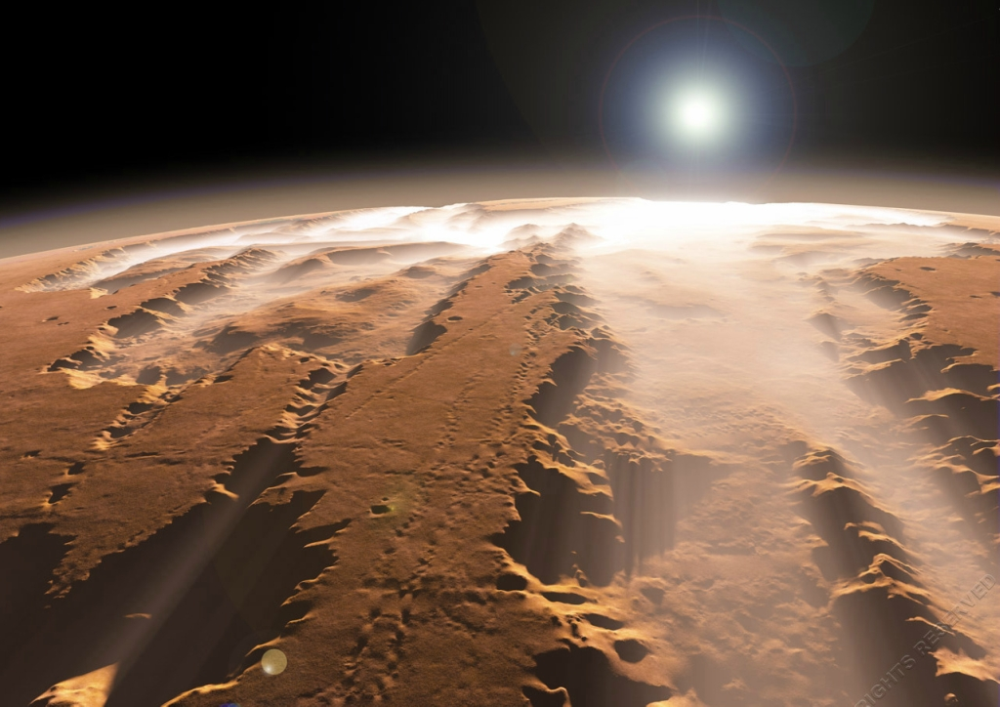
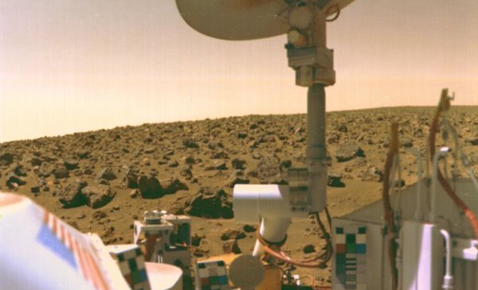
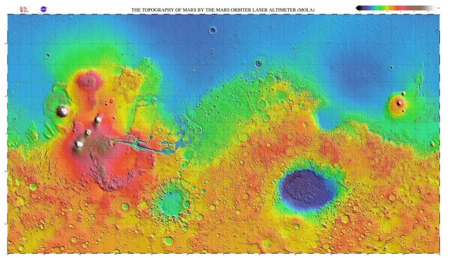
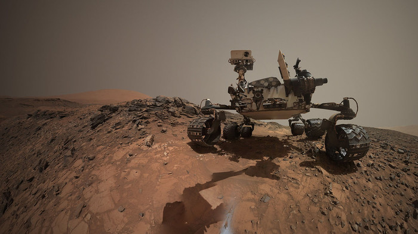

Исследование планеты Марс
Более продвинутые исследования Марса начались с освоением космоса и запуском аппаратов к другим солнечным планетам в системе. Космические зонды стали отправлять к планете в конце 20-го века. Именно с их помощью удалось познакомиться с чужим миром и расширить наше понимание планет. И хотя нам не удалось отыскать марсиан, жизнь могла существовать там ранее.
Активное изучение планеты развернулось в 1960-х гг. СССР отправили 9 беспилотных зондов, которые так и не добрались к Марсу. В 1964 году НАСА запустили Маринер 3 и 4. Первая провалилась, но вторая через 7 месяцев прилетела к планете.
Маринер-4 сумел получить первые масштабные снимки чужого мира и передал сведения об атмосферном давлении, отсутствии магнитного поля и радиационного пояса. В 1969 году к планете прибыли Маринеры 6 и 7.
В 1970-м году между США и СССР развернулась новая гонка: кто первым установим спутник на марсианской орбите. В СССР задействовали три аппарата: Космос-419, Марс-2 и Марс-3. Первый вышел из строя еще при запуске. Два других запустили в 1971 году, и они добирались 7 месяцев. Марс-2 разбился, но Марс-3 приземлился мягко и стал первым, кому это удалось. Но передача велась всего 14.5 секунд.

В 1971 году США отправляют Маринер 8 и 9. Первый упал в воды Атлантического океана, но второй успешно закрепился на марсианской орбите. Вместе с Марсом 2 и 3 они попали в период марсианской бури. Когда она закончилась, Маринер-9 сделал несколько снимков, намекающих на воду в жидком состоянии, которая могла наблюдаться в прошлом.
В 1973 году от СССР отправилось еще четыре аппарата, где все, кроме Марс-7, доставили полезную информацию. Больше всего пользы было от Марс-5, который прислал 60 снимков. Миссия Викингов США стартовала в 1975 году. Это были две орбитали и два посадочных аппарата. Они должны были отлеживать биосигналы и изучить сейсмические, метеорологические и магнитные характеристики.

Обзор Викинга показал, что когда-то на Марсе была вода, ведь именно масштабные наводнения могла вырезать глубокие долины и размыть углубления в скальных породах. Марс оставался загадкой до 1990-х гг., пока не отправился Mars Pathfinder, представленный космическим кораблем и зондом. Миссия приземлилась в 1987 году и протестировала огромное количество технологий.
В 1999 году прибыл Mars Global Surveyor, установивший слежку за Марсом на практически полярной орбите. Он изучал поверхность почти два года. Удалось запечатлеть овраги и мусорные потоки. Датчики показывали, что магнитное поле не создается в ядре, но есть частично на участках коры. Также удалось создать первые 3D-обзоры полярной шапки. Связь потеряли в 2006 году.

Марс Одиссей прибыл в 2001 году. Он должен был использовать спектрометры, чтобы обнаружить доказательства жизни. В 2002 году нашли огромные водородные запасы. В 2003 прибыл Марс-экспресс с зондом. Бигл-2 вошел в атмосферу и подтвердил наличие водяного и углекислого льда на территории южного полюса.
В 2003 году высадили известные роверы Spirit и Opportunity, которые изучали горные породы и почву. MRO достиг орбиты в 2006 году. Его инструменты настроены на поиск воды, льда и минералов на/под поверхностью.

MRO ежедневно исследует марсианскую погоду и поверхностные характеристики, чтобы отыскать наилучшие места для посадки. Ровер Curiosity высадился в кратере Гейл в 2012 году. Его инструменты важны, так как раскрывают прошлое планеты. В 2014 году за исследование атмосферы принялся MAVEN. В 2014 году прилетел Мангальян от индийской ISRO
В 2016 году началось активное изучения внутреннего состава и ранней геологической эволюции. В 2018 году Роскосмос планирует отправить свой аппарат, а в 2020 году подключатся Арабские Эмираты.
Государственные и частные космические агентства настроены серьезно на создание экипажных миссий в будущем. К 2030-му году НАСА рассчитывает отправить первых марсианских астронавтов.
В 2010 году Барак Обама настоял на том, чтобы сделать Марс приоритетной целью. ЕКА планируют отправить людей в 2030-2035 гг. Есть пара некоммерческих организаций, которые собираются отправить небольшие миссии с экипажем до 4-х человек. Причем они получают деньги от спонсоров, мечтающих превратить поездку в живое шоу.
Глобальную деятельность развернул генеральный директор SpaceX Илон Маск. Ему уже удалось совершить невероятный прорыв – система многоразовых запусков, которая экономит время и средства. Первый полет на Марс запланирован в 2022 году. Речь уже идет о колонизации.
Марс считается наиболее изученной чужой планетой в Солнечной системе. Роверы и зонды продолжают исследовать ее особенности, предлагая каждый раз новую информацию. Удалось подтвердить, что Земля и Красная планета сходятся по характеристикам: полярные ледники, сезонные колебания, атмосферный слой, проточная вода. И есть сведения, что ранее там могла располагаться жизнь. Поэтому мы продолжаем возвращаться к Марсу, который, скорее всего, станет первой колонизированной планетой.
Ученые все еще не утратили надежду найти жизнь на Марсе, даже если это будут первобытные останки, а не живые организмы. Благодаря телескопам и космическим аппаратам у нас всегда есть возможность полюбоваться на Марс онлайн. На сайте найдете много полезной информации, качественных фото Марса в высоком разрешении и интересные факты о планете. Вы всегда можете использовать 3D-модель Солнечной системы, чтобы проследить за внешним видом, характеристикой и движением по орбите всех известных небесных тел, включая Красную планету.